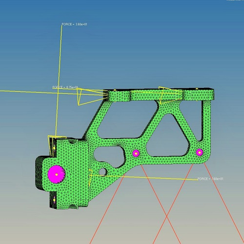
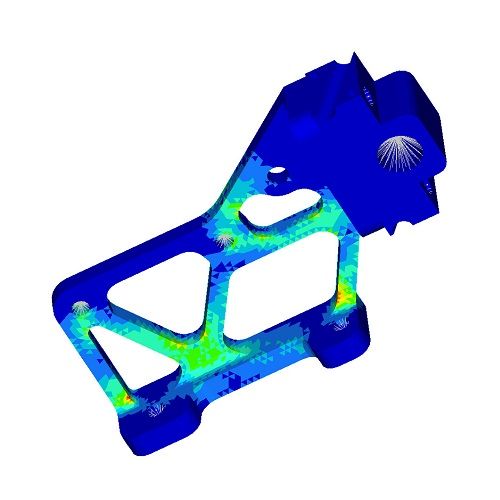

Solar Car Team
Mechanical Design Engineer
I joined the University of Michigan Solar Car team from January 2014 to October 2014. As part of the Brakes team from the Mechanical Department, I designed Quantum's parking brake system for the 2014 American Solar Challenge.
Background
The University of Michigan Solar Car Team was formed in 1989 and has since been the most successful solar car team in the North America. Currently on a row of five consecutive American Solar Challenge (ASC) wins, the team has won the competition eight times in total as of 2014. The team has also participated in the World Solar Challenge and has placed as high as 3rd internationally in 2009 and 2011.
As a student project team, the Solar Car Team is made up of four engineering divisions: mechanical, electrical, aerodynamics, and strategy, as well as an operations division and also a business division. Members include University of Michigan students mainly from the College of Engineering, but also comprising students of other majors or academic background.
My Work and Experience
During the Winter 2014 semester, I joined the University of Michigan Solar Car Team under the mechanical engineering division. Since the solar car that was going to race in the 2014 American Solar Challenge was Quantum, which was built in 2011, the team was tasked to improve the condition of the car. Due to an update to the ASC2014 regulations, which required a seperate braking mechanism as a parking brake (which was not required during 2011), I was tasked to design and build a parking brake.
According to the regulations, the brake has to be able to hold the car in place with an amount of force applied on it, be separate from the main braking system, and be able to be activated and remain so without constant effort from driver. It also stated that the brakes must not have any contact with the wheel or the tyre. Besides the regulations, I had to take into account the structure and construction of the already built Quantum to plan the parking brake system.
With these constraints, I proceeded to create designs for the parking brake, which ultimately functions by having a dowel in between crests of the rotor, restraining any rotation of the wheel. It was a simple mechanical device that thrusts an aluminum dowel through the trough of the rotor when activated. I first hand sketched the design, and made a 3D CAD model with Solidworks. Then, I proceeded to run stress analysis on the model with Hypermesh, and optimized the design with Optistruct.
The design process was a new experience to me, having only worked in teams from mechanical design courses that was almost entirely guided by the instructors. Although I was able to discuss the ideas with the other members, the project was primarily individual. Throughout the design process, I experienced the procedures that engineers had to undergo to produce the ideal product. From sketches and CAD drawings, to force analyses and optimizations, I had to constantly revise my designs from design review comments. I enjoyed the design process greatly despite having to work through the process repetitively.